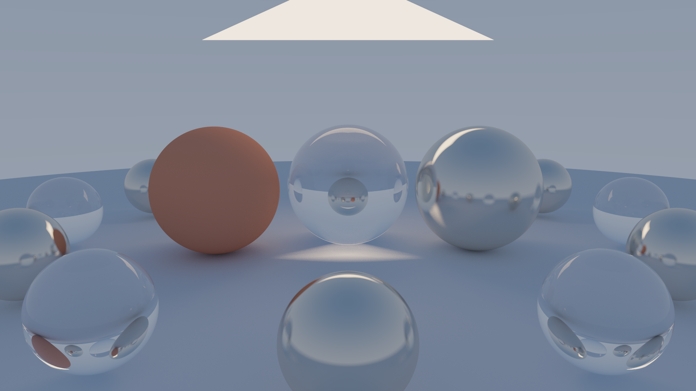

HELIOS
Adaptive hybrid distributed rendering. Small body copy on warm paper checks how text strokes invert inside the mask and whether the antialiased edge stays clean against fine type.
DARKROOM
Charcoal ground (#121518) like the Observatory's trace inspector and code listings. Light text should turn dark inside the disc.
C · Teal #0f7479
C · Amber #c3821f
C · Grey #9aa2a9

Expected: button, link, summary and the card register as interactive; the disabled button, select and range do not. Pressing compresses the body slightly; releasing rebounds. clicks: 0
Select this sentence with the mouse: text selection needs the native I-beam so the caret position is exact.
render_tile(tile, scene, cfg) // copy me
#pragma omp for schedule(static)Copy-style field
Wipe control (pointer capture)
Canvas precision target · no cell